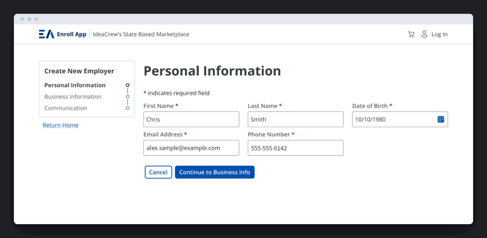
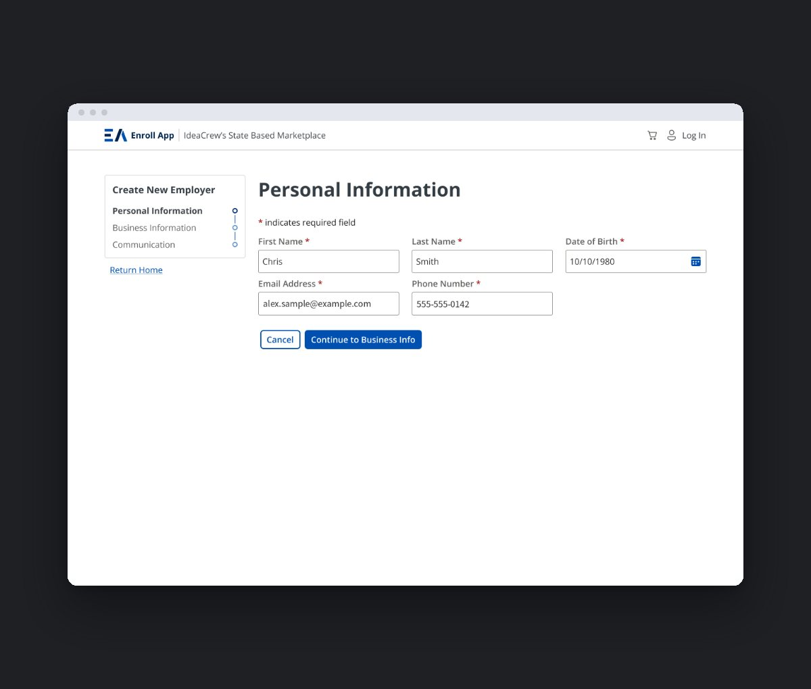
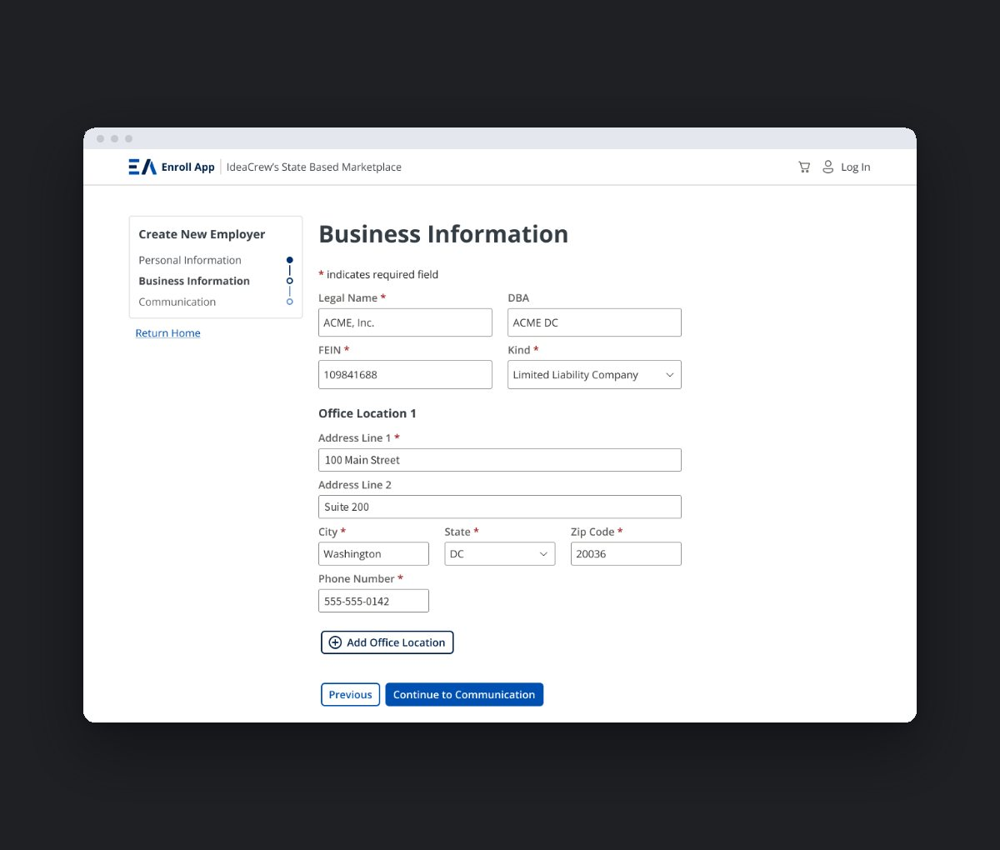
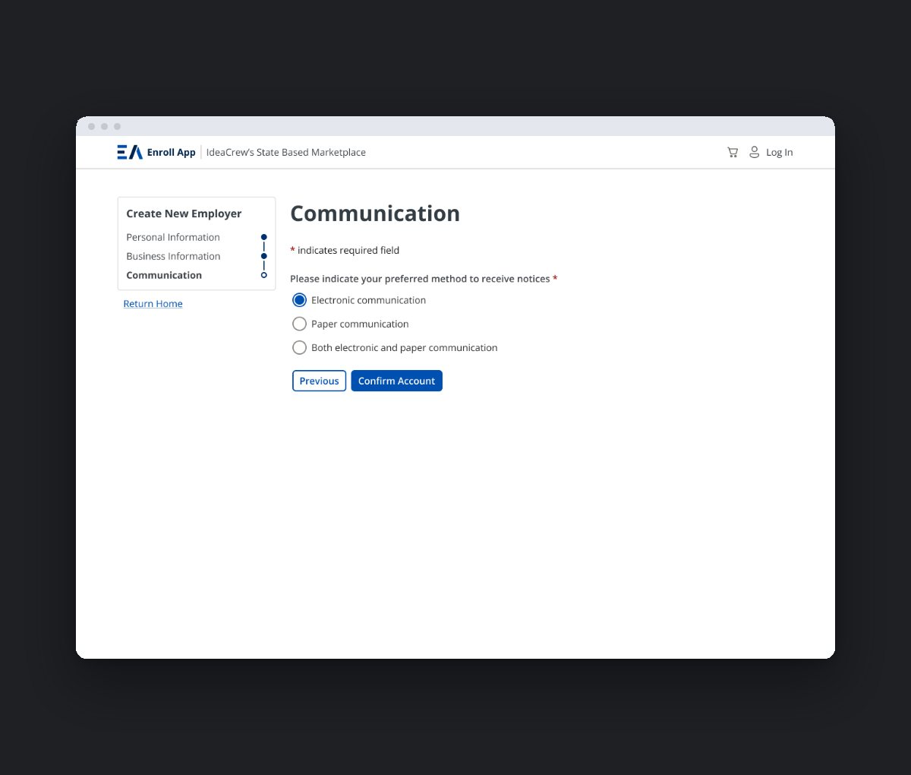
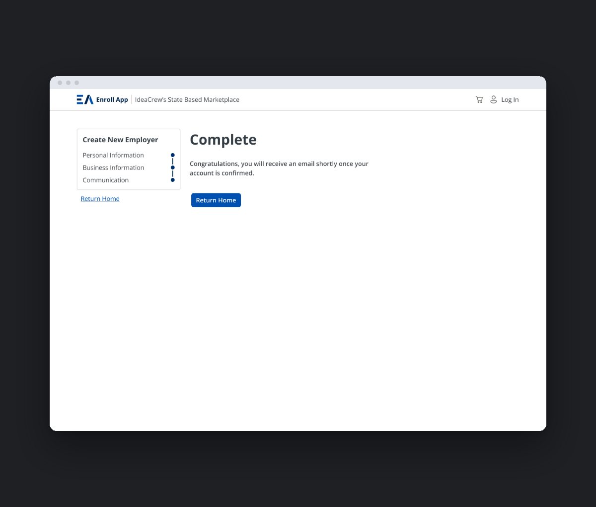
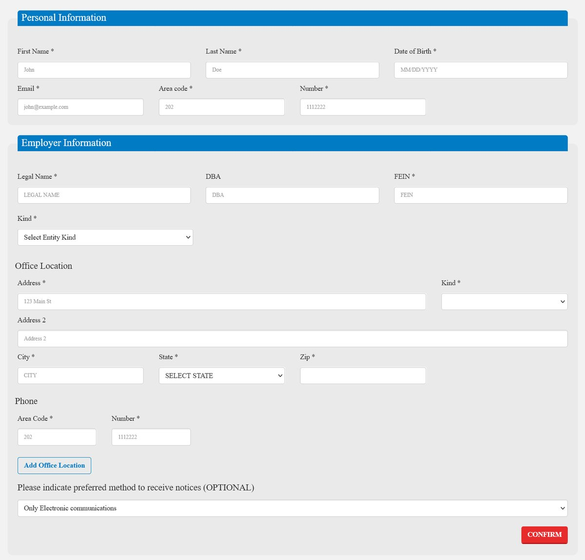
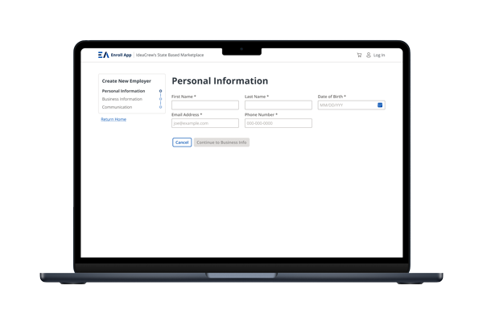
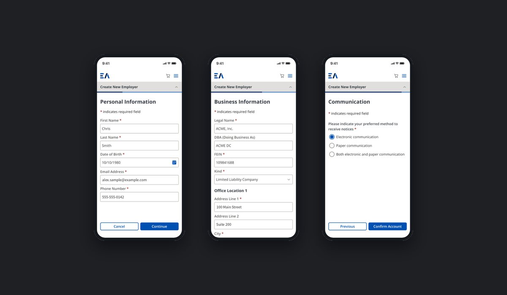
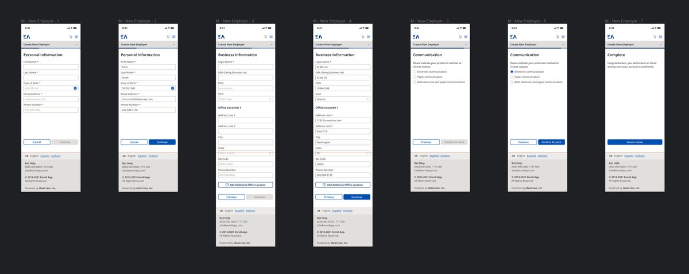

Enroll App
Enroll App runs the health insurance marketplaces for Washington, DC, Maine and Massachusetts. It's where people apply for coverage, find out what help they qualify for, and pick a plan, and where small businesses set up coverage for their employees. The app was built on Bootstrap 3 with no real mobile support, and an accessibility audit found problems serious enough to stop some people with disabilities from enrolling at all. I was design lead on a $1M+ modernization that moved the platform to Bootstrap 4 and 5, and I led the redesign of the enrollment experience on top of it: mobile-first, WCAG 2.1 AA and Section 508 compliant, and built on a new Figma design system. The redesign is live in Maine's Individual Market, and DC's migration is planned for 2026–2027.

New employer sign-up
Small businesses used to set up coverage on one long page: their own details, the company's details, office locations and notice preferences, all ending in a red Confirm button. I split it into three short steps, Personal Information, Business Information and Communication, with a progress rail that always shows where you are and what's left.
Each step asks about one thing, and Continue only unlocks once the required fields are done, so nobody reaches the end and finds a list of errors. Owners often need to stop and find a document like their FEIN, so Save & Exit lets them leave and pick up where they left off next time they log in. The last screen says plainly what happens next: a confirmation email once the account is approved.




Before

After

Phone first
A large share of marketplace users only have a phone, and the old app didn't work on one. Every step of the new flow was designed at phone width first, then expanded for desktop. Fields stack in a single column, the main action stays at the bottom of each step, and nothing needs horizontal scrolling.


Eligibility results
When an application is finished, the results screen tells people what they qualify for: whether they can shop for plans, and whether they qualify for tax credits or other financial help. In the old version, elements on the screen competed for attention, and the most valuable information sat low on the page or was hidden in an accordion. I reorganized the screen so the results come first, rewrote it in plain language, and ended it with one clear next step, so people know what they qualify for and what to do about it.
Help on every screen
People applying for coverage are often stressed, short on time, or reading in a second language. Every screen carries a language switch for English, Español and Amharic, and a help line with a TTY number, so help is never more than a glance away. An “I don't have a SSN” option keeps people without one from getting stuck at a required field, instead of abandoning the application.
Accessible by default
The audit found federal accessibility violations, so patching screens one at a time wasn't going to work. I built WCAG 2.1 AA and Section 508 requirements into the design system's foundations: color, type, components and every interaction state. Focus, error and disabled states all meet contrast requirements, so any new screen built from the system starts out accessible instead of being fixed later.
Rolling it out
I present designs directly to the state marketplaces and turn their feedback and policy requirements into product decisions. Alongside Maine's version, there's an unbranded reference version the other states can adopt with their own branding. DC, the platform's largest deployment, is next, with its migration planned for 2026–2027.